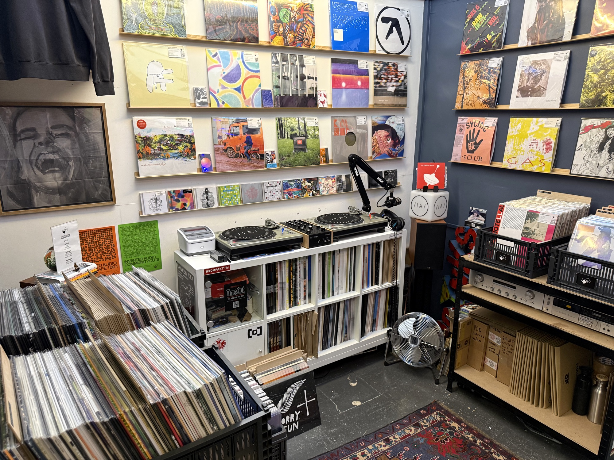

INDEPENDENT MUSIC / HOLDRONS ARCADE
Inverted Audio
Record Store
Electronic music, selected records and a place to meet other listeners.

Meet Tom and the shop
In the recorded interview, Tom Durston introduces a shop specialising in electronic music, with both new releases and second-hand records. He describes hand-picking stock and sharing knowledge about artists, labels and the connections between releases.
That work extends beyond the racks: recommendations help visitors explore music they might not already know. Tom describes customers including DJs, producers, artists and committed listeners, with people finding the shop through recommendations as well as online.
Listening together
Tom talks about record-release events and Community Cuts, inviting customers to play their records and meet one another. Here, the shop’s relationship with a community takes a specific form: shared listening, exchanging knowledge and discovering music together.
This is the shop’s account of its own work and music community. It offers a closer view of one business inside the arcade.
IN CONVERSATION
Inside Inverted Audio
Watch Tom introduce the shop, explain his selection and talk about the people and events connected to it. Hear directly from Tom in this short introduction to the store.
From magazine to record store
The shop’s official website connects the physical store with Inverted Audio’s independent electronic-music magazine. Alongside records, the wider platform publishes artist conversations, reviews and mixes, and organises music events. The store gives that editorial work a place where people can browse, listen and talk in person.
About the store — Inverted AudioKeep the conversation open
Looking beyond a shopfront means making room for what the people working there want to share. This introduction follows the requested starting points from the conversation: a shop photograph, its name and address, and video of Tom introducing the store.
For current releases, events or a question about the shop, contact Inverted Audio directly. For corrections to this page, get in touch.